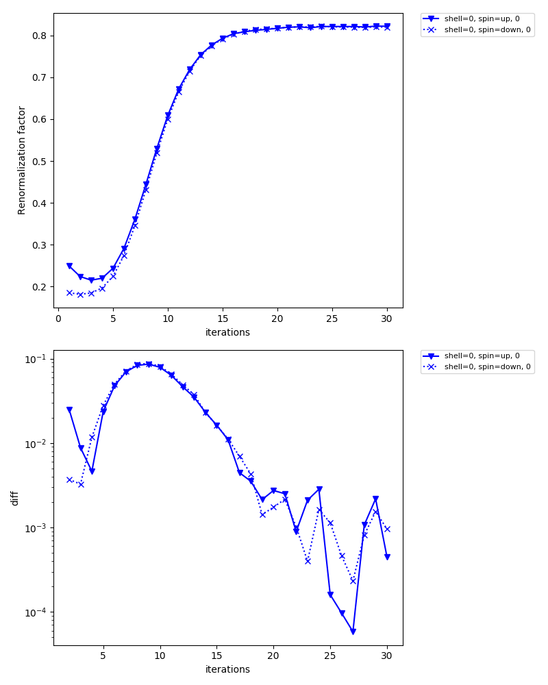
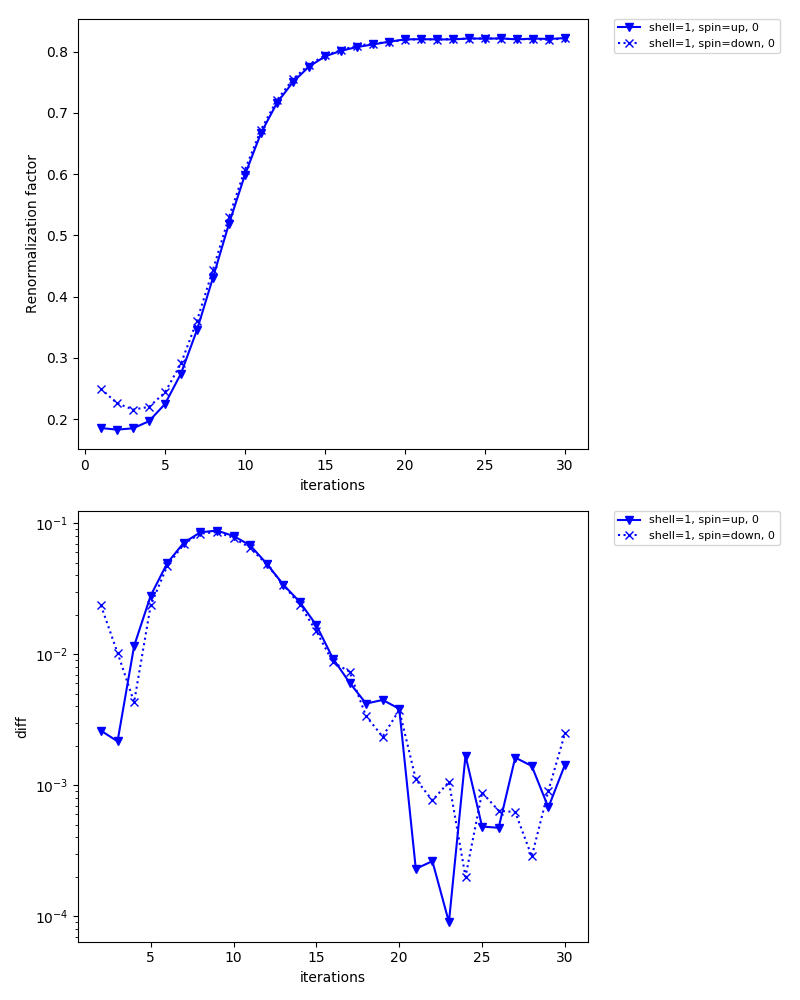

Antiferromagnetic state in 3D Hubbard model¶
In this tutorial, you will learn the following:
- How to define a lattice model using the Wannier90 interface
- How to calculate antiferromagnetic states
- How to set an initial guess for the self-energy
As a particular example, we consider the Hubbard model on a cubic lattice with nearest neighbor hopping of \(t=1\). Within the single-site DMFT approximation, the model shows an antiferromagnetic transition at low temperature. The transition temperature was estimated as \(T_\mathrm{c}/t\simeq 0.5\) in a previous study. In this tutorial, we compute the antiferromagetic state below \(T_\mathrm{c}\) using the ALPS/CT-HYB solver. The complete input file is shown below.
[model]
seedname = cubic
lattice = wannier90
ncor = 8
#Numbers of orbitals on two inequivalent shells
norb = 1, 1
nelec = 8.0
kanamori = [(10.0, 0.0, 0.0), (10.0, 0.0, 0.0)]
#Mapping from correlated shells to two inequivalent shells
corr_to_inequiv = 0, 1, 1, 0, 1, 0, 0, 1
nk = 16
[mpi]
command = '$MPIRUN -np #'
[system]
beta = 5.0
#half filling (mu=U/2)
mu = 5.0
fix_mu = True
[impurity_solver]
name = ALPS/cthyb
timelimit{int} = 60
exec_path{str} = $HOME/opt/CT-HYB/bin/hybmat
[control]
max_step = 30
initial_static_self_energy = {0: 'init_se_up.txt', 1: 'init_se_down.txt'}
[tool]
broadening = 0.1
knode = [(G,0.0,0.0,0.0),(X,0.5,0.0,0.0),(M,0.5,0.5,0.0),(G,0.0,0.0,0.0)]
nk_line = 100
omega_max = 10.0
omega_min = -10.0
Nomega = 400
Define lattice model¶
First, we define the hopping matrix of the 3D Hubbard model with a 2x2x2 unit cell.
Running mk_hr.py generates a text file (cubic_hr.dat) in the Wannier90 format.
The unit cell contains eight sites whose internal coordinates are (0, 0, 0), (0, 0, 1), (0, 1, 0), (0, 1, 1), (1, 0, 0), (1, 0, 1), (1, 1, 0), (1, 1, 1).
We now assume an antiferromagnetic order at \(q=(\pi, \pi, \pi)\). To this end, we assign the eight sites (correlated shells) to two inequivalent shells by using the corr_to_inequiv parameter in the model section.
python mk_hr.py
Generate initial guess for self-energy¶
Second, we generate intial guesses for the (static) self-energies on the two inequivalent shells.
Running mk_init_se.py generates init_se_up.txt and init_se_down.txt.
python mk_init_se.py
Self-consistent calculations¶
Now, DMFT calculations can be done as usual.
export MPIRUN="mpirun"
dcore_pre cubic.ini > output-pre
dcore cubic.ini --np 48 > output
dcore_post cubic.ini --np 48 > output-post
In the standard output of dcore, you will see that the magnetic moments converge to \(\simeq 0.43\) (86 % of the saturated moment).
Density Matrix
Inequivalent Shell 0
Spin up
0.929-0.000j
Eigenvalues: [0.92877164]
Spin down
0.072-0.000j
Eigenvalues: [0.07229858]
Magnetic moment (only spin contribution, S=1/2 gives 0.5)
mx, my, mz : 0.0 0.0 0.428236533178
Inequivalent Shell 1
Spin up
0.078-0.000j
Eigenvalues: [0.0779467]
Spin down
0.930-0.000j
Eigenvalues: [0.92994248]
Magnetic moment (only spin contribution, S=1/2 gives 0.5)
mx, my, mz : 0.0 0.0 -0.425997888424
Inequivalent shell0
{kind=link}
Inequivalent shell1
{kind=link}